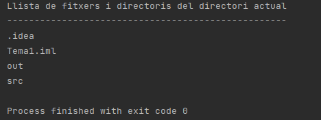

2.- La classe File. Generalitats.
En Java, i també en Kotlin per ser una espècie d'extensió de Java, per a gestionar el sistema de fitxers s’utilitza bàsicament la classe ‘File’. És una classe que s’ha d’entendre com una referència a la ruta o localització de fitxers del sistema. NO representa el contingut de cap fitxer, sinó la ruta del sistema on es localitza el fitxer. Com que es tracta d’una ruta, la classe pot representar tant fitxers com carpetes o directoris.
Si fem servir una classe per a representar rutes, s’aconsegueix una total independència respecte de la notació que utilitza cada sistema operatiu per descriure-les. Recordem que Java i Kotlin són llenguatges multiplataforma i, per tant, s'ha d'intentar fer programes que es puguen executar en qualsevol Sistema Operatiu (Windows o Linux).
L’estratègia utilitzada per cada SO no afecta la funcionalitat de la classe File, ja que aquesta, en col·laboració amb la màquina virtual, adaptarà les sol·licituds al SO amfitrió de forma transparent al programador, és a dir, sense necessitat que el programador haja d’indicar o configurar res.
Els objectes creats de la classe File es troben estretament vinculats a la ruta amb la qual s’han creat. Això significa que les instàncies de la classe File durant tot el seu cicle de vida només representaran una única ruta, la que se’ls va associar en el moment de la creació. La classe File no disposa de cap mètode ni mecanisme per modificar la ruta associada. En cas de necessitar noves rutes, caldrà sempre crear un nou objecte i no serà possible reutilitzar els ja creats vinculant-los a rutes diferents.
Per a crear un objecte File es pot utilitzar qualsevol dels 3 constructors següents:
- File(String directori_i_fitxer): indiquem en un únic paràmetre tant el directori com el fitxer, és a dir, el fitxer amb la seua ruta. Recordeu que en sistemes Linux per a la ruta utilitzem la barra de dividir, mentre que en Windows la contra-barra. Com que aquest caràcter és el d'escape, s'haurà de posar dues vegades:
val fitxer_1 = File("/home/usuari/AD/T1/exemple1.txt")
val fitxer_1 = File("C:\\AD\\T1\\exemple1.txt")
NotaCap de les referències anteriors són desitjables, ja que nosaltres intentarem fer programes que funcionen en qualsevol plataforma, i la primera referència no funcionarà en Windows, i la segona no funcionarà en Linux. Al llarg del tema aprendrem com fer les referències de manera que funcionen en qualsevol plataforma.
Per una altra banda, observeu com hem utilitzat la paraula reservada val per a crear una constant. Quasi sempre la utilitzarem per als File, ja que només en algunes ocasions voldrem reutilitzar la variable assignant-li un altre valor
Per a fer referència a un directori s'utilitza la mateixa tècnica, com ja havíem vist:
val dir = File("/home/usuari/AD/T1")
En els exemples anteriors hem posat una ruta absoluta, que comença des de l'arrel. Si no la posem absoluta (si no comença per / ) serà relativa i començarà en el directori actiu. Si suposem que el directori actiu és /home/usuari, d'aquesta manera faríem referència al mateix lloc:
val dir = File("AD/T1");
NotaObserveu que les anteriors sentències no donarien cap error encara que els subdirectoris i fitxers no existisquen. No és cap contradicció, ja que podria ser que férem referència en un File a un fitxer o directori justament per a crear-lo. Més avant veurem que tenim mètodes per a detectar l'existència real
- File(String directori, String fitxer): en el primer paràmetre (String) indiquem el directori amb ruta, i en el segon el fitxer (sense ruta). Farà referència a un fitxer amb el nom com el segon paràmetre col·locat en el directori referenciat en el primer paràmetre. Observeu com el segon paràmetre podria ser també un directori, i per tant seria una referència a un subdirectori del directori referenciat en el primer paràmetre.
val fitxer_2 = File("/home/usuari/AD/T1" , "exemple2.txt")
- File(File directori, String fitxer): Ara el directori és un File creat anteriorment
val fitxer_3 = File(dir , "exemple3.txt")
En els exemples anteriors hem posat directament les rutes. Però els programadors de Java i de Kotlin han de fer un esforç per independitzar les aplicacions implementades de les plataformes on s’executaran. Per tant, haurem d'anar amb cura, fent servir tècniques que eviten escriure les rutes directament al codi. Per això encara que ara al principi utilitzarem els 3 constructors, en el futur hauríem d'utilitzar massivament el tercer, ja que com veieu la manera d'especificar la ruta de localització del fitxer, és per mig d'un altre File, i no ha fet falta posar cap barra de dividir ni cap contra-barra. Per tant hem fet referència a un fitxer (o subdirectori) dins d'un directori sense cap barra ni contra-barra, i per tant ens val per qualsevol Sistema Operatiu.
La classe File encapsula pràcticament tota la funcionalitat necessària per gestionar un sistema de fitxers organitzat en arbre de directoris. És una gestió completa que inclou:
- Funcions de manipulació i consulta de la pròpia estructura jeràrquica (creació, eliminació, obtenció de la ubicació, etc. de fitxers o directoris)
- Funcions de manipulació i consulta de les característiques particulars dels elements (noms, mida o capacitat, etc.)
- Funcions de manipulació i consulta d’atributs específics de cada Sistema Operatiu, com per exemple els permisos d’escriptura, d’execució, atributs d’ocultació. Només funcionarà si el sistema operatiu amfitrió suporta també la funcionalitat d'aquestos atributs.
En la classe original de Java no ens permet accedir al contingut dels fitxers. Això es resoldrà en el següent tema. Kotlin sí que ens permetrà accedir al contingut dels fitxers a partir de la classe File, però per coherència ho deixarem per al proper tema.
Nota
Tots els exemples i exercicis de cada tema els col·locarem en un únic projecte de Kotlin amb el nom del tema. en aquest cas l'anomenarem Tema1. Els exemples els col·locarem en un paquet anomenat exemples i els exercicis en un paquet anomenat exercicis.
En l'apartat d'objectius d'aquest tema, que és el de l'inici hi ha un vídeo que explica la instal·lació de l'entorn de programació, IntelliJ IDEA, i al final d'aquest vídeo s'explica com crear el projecte, els paquets exemples i exercicis i com copiar els programes en un fitxer Kotlin.
Mirem un exemple. Anem a fer un programa per a traure la llista de fitxers i directoris del directori actual. Per a fer referència al directori actual, utilitzarem ".", que ens serveix per a tots els Sistemes. Per defecte, el directori actiu és el directori del projecte. Per a obtenir la llista d'elements (fitxers i directoris) utilitzarem el mètode list() de la classe File. Veurem aquest mètode, juntament amb els mètodes més importants en la següent pregunta. Copieu-vos el següent en un fitxer Kotlin anomenat Exemple_1_1.kt
package exemples
import java.io.File
fun main(args: Array<String>) {
val f = File(".")
println("Llista de fitxers i directoris del directori actual")
println("---------------------------------------------------")
for (e in f.list())
println(e);
}I aquest seria el resultat:

que són els fitxers del directori arrel del projecte Tema1 (situat en la carpeta IdeaProjects). Observeu que fins i tot mostra els fitxers ocults (que són els que comencen per un punt)
I aprofitant la potencialitat de Kotlin, podem traure fàcilment aquesta llista ordenada alfabèticament, senzillament posant .sorted(). D'aquesta manera, el programa anterior Exemple_1_1.kt ens quedarà ara:
package exemples
import java.io.File
fun main(args: Array<String>) {
val f = File(".")
println("Llista de fitxers i directoris del directori actual")
println("---------------------------------------------------")
for (e in f.list().sorted())
println(e);
}I aquest seria el resultat:

Si vulguérem traure el contingut d'un directori concret, el posaríem en el moment de definir el File, en compte del punt per a indicar el directori actual.
Una altra modificació seria demanar per teclat el directori del qual volem mostrar el contingut. Copieu el següent codi en el fitxer Kotlin Exemple_1_2.kt
package exemples
import java.io.File
import java.io.BufferedReader
import java.io.InputStreamReader
fun main(args: Array<String>) {
println("Introdueix un directori:")
val ent = BufferedReader(InputStreamReader(System.`in`)).readLine()
val f = File(ent)
System.out.println("Llista de fitxers i directoris del directori " + ent)
System.out.println("---------------------------------------------------")
for (e in f.list().sorted())
System.out.println(e);
}
Llicenciat sota la Llicència Creative Commons Reconeixement NoComercial CompartirIgual 2.5